library(igraph)
library(ggraph)
library(graphlayouts)
library(networkdata)
library(ggforce)11 Advanced Layouts
Knowing the basics of ggraph is enough to handle most network visualization tasks well. However, there are some more advanced layouting and visualization techniques that can be used to visualize specific types of networks or to emphasize certain structural features. In this part, we will show some examples of such more advanced layouts and learn how to use them with ggraph.
11.1 Packages needed for this chapter
11.2 Data Preparation
We use the same network dataset as in the previous chapter, the network of characters in the first season of Game of Thrones which is available in networkdata. We also apply the same preprocessing steps to prepare the data for visualization.
data("got")
gotS1 <- got[[1]]
got_palette <- c(
"#1A5878",
"#C44237",
"#AD8941",
"#E99093",
"#50594B",
"#8968CD",
"#9ACD32"
)
## compute a clustering for node colors
V(gotS1)$clu <- as.character(membership(cluster_louvain(gotS1)))
## compute degree as node size
V(gotS1)$size <- degree(gotS1)11.3 Large Networks
The stress layout from graphlayouts also works well with medium to large graphs. Figure 11.1 shows the biggest component of the co-authorship network of R package developers on CRAN (~12k nodes) which was created with layout_with_stress().
Beyond ~20k nodes, however, it is advisable to switch to dedicated layout algorithms which are optimized to work with large graphs such as layout_with_pmds() or layout_with_sparse_stress().
These are capable to deal with networks of around 100,000 nodes. At this size, though, most visualizations will not be very informative anymore.
11.4 Concentric Layouts
Circular layouts as shown in Figure 11.2 using layout_in_circle() from igraph, are generally not advisable.
ggraph(gotS1, layout = "circle") +
geom_edge_link0(aes(edge_linewidth = weight), edge_colour = "grey66") +
geom_node_point(aes(fill = clu, size = size), shape = 21) +
geom_node_text(aes(size = size, label = name), family = "serif") +
scale_edge_width_continuous(range = c(0.2, 1.2)) +
scale_size_continuous(range = c(1, 5)) +
scale_fill_manual(values = got_palette) +
coord_fixed() +
theme_graph() +
theme(legend.position = "none")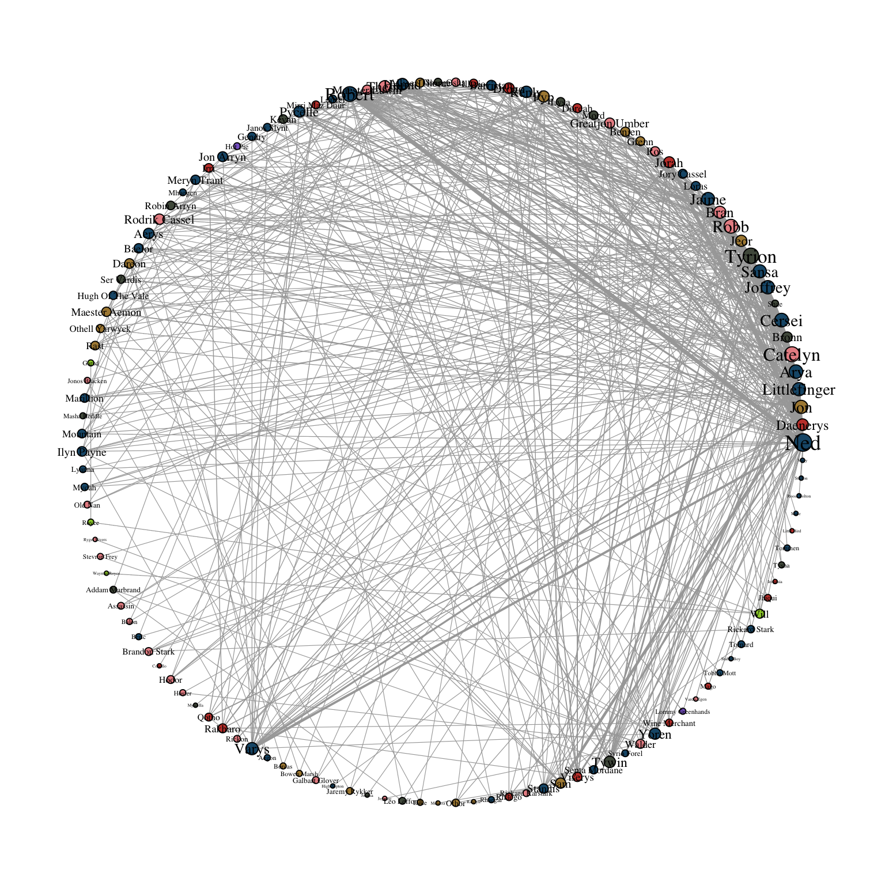
Concentric circles, on the other hand, help to emphasize the position of certain nodes in the network. The graphlayouts package offers two functions to create concentric layouts, layout_with_focus() and layout_with_centrality().
The first one allows one to focus the network on a specific node and arrange all other nodes in concentric circles (depending on the geodesic distance). In Figure 11.3, we focus the layout around the character Ned Stark.
ggraph(gotS1, layout = "focus", focus = 1) +
geom_edge_link0(aes(edge_linewidth = weight), edge_colour = "grey66") +
geom_node_point(aes(fill = clu, size = size), shape = 21) +
geom_node_text(
aes(filter = (name == "Ned"), size = size, label = name),
family = "serif"
) +
scale_edge_width_continuous(range = c(0.2, 1.2)) +
scale_size_continuous(range = c(1, 5)) +
scale_fill_manual(values = got_palette) +
coord_fixed() +
theme_graph() +
theme(legend.position = "none")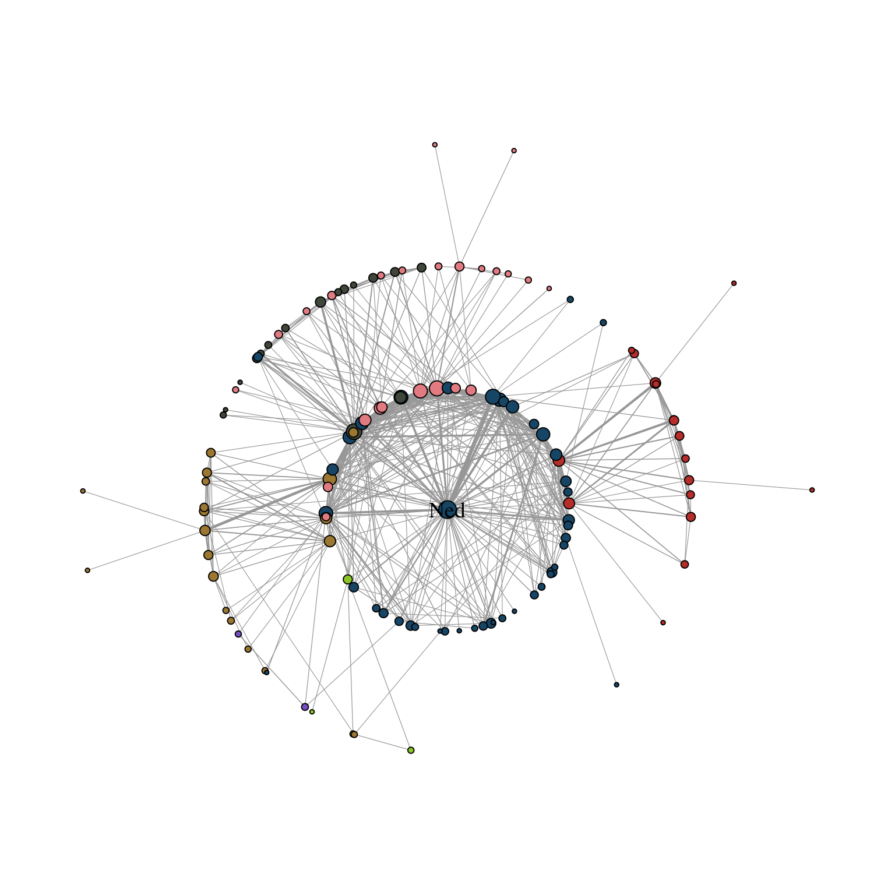
The parameter focus is used to choose the node id of the focal node. The function coord_fixed() is used to always keep the aspect ratio at one so that the circles always appear as a circle and not an ellipse.
The function draw_circle() can be used to add the concentric circles explicitly as shown in Figure 11.4.
ggraph(gotS1, layout = "focus", focus = 1) +
draw_circle(col = "#00BFFF", use = "focus", max.circle = 3) +
geom_edge_link0(aes(edge_linewidth = weight), edge_colour = "grey66") +
geom_node_point(aes(fill = clu, size = size), shape = 21) +
geom_node_text(
aes(filter = (name == "Ned"), size = size, label = name),
family = "serif"
) +
scale_edge_width_continuous(range = c(0.2, 1.2)) +
scale_size_continuous(range = c(1, 5)) +
scale_fill_manual(values = got_palette) +
coord_fixed() +
theme_graph() +
theme(legend.position = "none")Warning: `aes_()` was deprecated in ggplot2 3.0.0.
ℹ Please use tidy evaluation idioms with `aes()`
ℹ The deprecated feature was likely used in the graphlayouts package.
Please report the issue at
<https://github.com/schochastics/graphlayouts/issues>.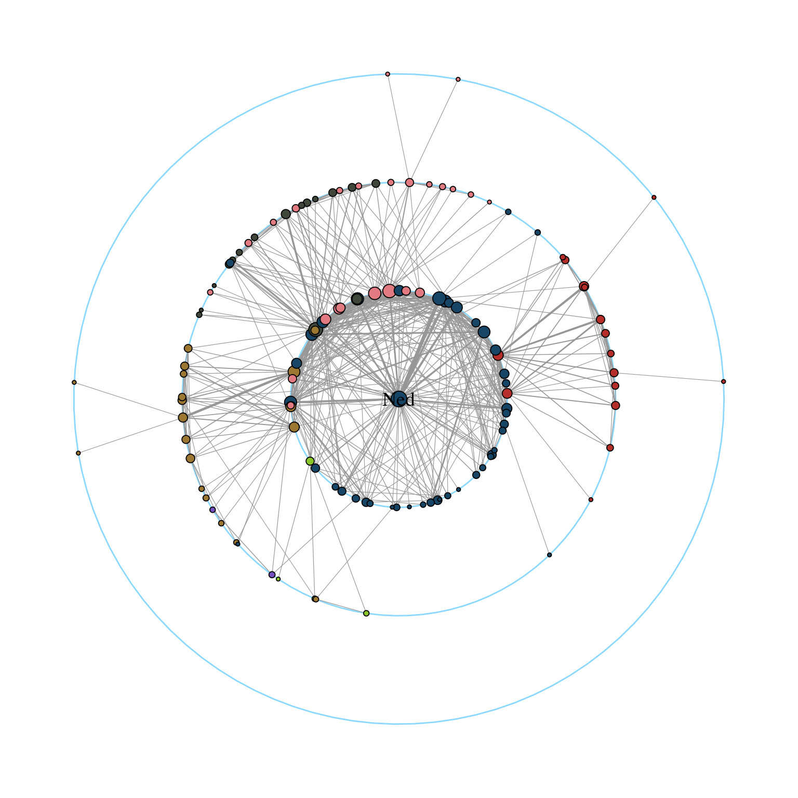
layout_with_centrality() works in a similar way. One can specify any centrality index (or any numeric vector for that matter), and create a concentric layout where the most central nodes are located in the center and the most peripheral nodes in the outer most circle. The numeric attribute used for the layout is specified with the cent parameter. In Figure 11.5, we use the weighted degree of the characters.
ggraph(gotS1, layout = "centrality", cent = graph.strength(gotS1)) +
geom_edge_link0(aes(edge_linewidth = weight), edge_colour = "grey66") +
geom_node_point(aes(fill = clu, size = size), shape = 21) +
geom_node_text(aes(size = size, label = name), family = "serif") +
scale_edge_width_continuous(range = c(0.2, 0.9)) +
scale_size_continuous(range = c(1, 8)) +
scale_fill_manual(values = got_palette) +
coord_fixed() +
theme_graph() +
theme(legend.position = "none")Warning: `graph.strength()` was deprecated in igraph 2.0.0.
ℹ Please use `strength()` instead.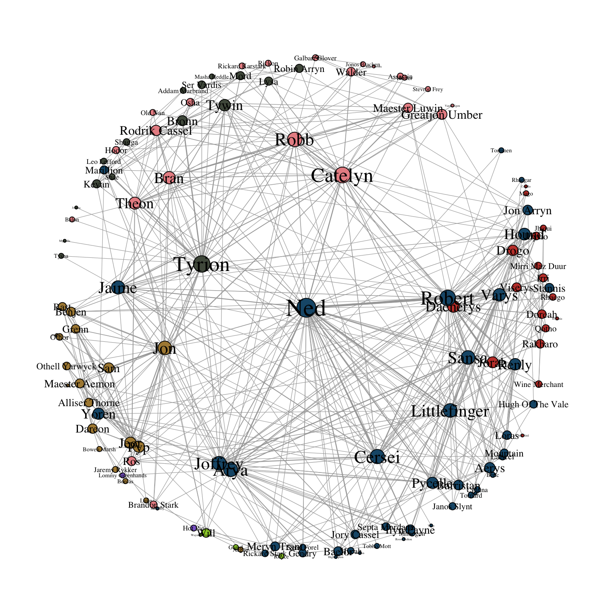
11.5 Backbone Layout
Real-world networks, and social networks in particular, often have a small-world structure, meaning that most nodes are only a few steps apart. When we try to visualise such networks with standard layout algorithms, the result often looks like a tangled “hairball”. Highly connected nodes and dense clusters pull everything toward the center, making it hard to see any underlying structure. To deal with this, we can use algorithms that first simplify the network and highlight its most meaningful connections. By focusing on the ties that hold groups together, these methods can make hidden community structures much easier to see, even in very dense graphs.
The graphlayouts package offers layout_as_backbone() for this purpose. To illustrate the algorithm, we create an artificial network with a subtle group structure using sample_islands() from igraph.
g <- sample_islands(9, 40, 0.4, 15)
# remove potential multiple edges
g <- simplify(g)
# assign the group membership as vertex attribute for coloring
V(g)$grp <- as.character(rep(1:9, each = 40))The network consists of 9 groups with 40 vertices each. The density within each group is 0.4 and there are 15 edges running between each pair of groups. Figure 11.6 shows the network using techniques we have learned so far.
ggraph(g, layout = "stress") +
geom_edge_link0(
edge_colour = "black",
edge_linewidth = 0.1,
edge_alpha = 0.5
) +
geom_node_point(aes(fill = grp), shape = 21) +
scale_fill_brewer(palette = "Set1") +
theme_graph() +
theme(legend.position = "none")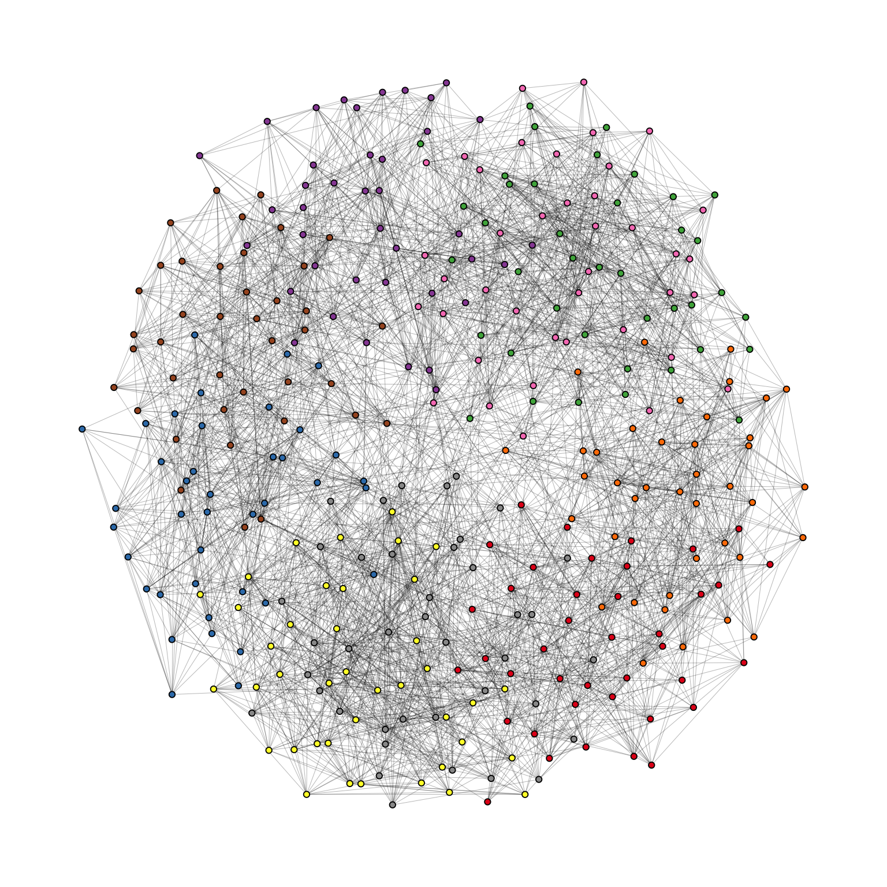
Evidently, the graph seems to be a proper “hairball” without any special structural features standing out. In this case, however, we know that there should be 9 groups of vertices that are internally more densely connected than externally. To uncover this group structure, we turn to the “backbone layout”.
The idea of the algorithm is as follows. For each edge, an embeddedness score is calculated which serves as an edge weight attribute. These weights are then ordered and only the edges with the highest score are kept. The number of edges to keep is controlled with the keep parameter. In our example below, we keep the top 40%. The parameter usually requires some experimenting to find out what works best. The resulting network is the “backbone” of the original network and the stress layout algorithm is applied to this network. Once the layout is calculated, all edges are added back to the network. Figure 11.7 shows the network with the backbone layout. The group structure is now clearly visible, even though the same number of edges are shown as in the previous plot.
ggraph(g, layout = "backbone", keep = 0.4) +
geom_edge_link0(edge_colour = "grey66", edge_linewidth = 0.1) +
geom_node_point(aes(fill = grp), shape = 21) +
scale_fill_brewer(palette = "Set1") +
scale_edge_color_manual(values = c(rgb(0, 0, 0, 0.3), rgb(0, 0, 0, 1))) +
theme_graph() +
theme(legend.position = "none")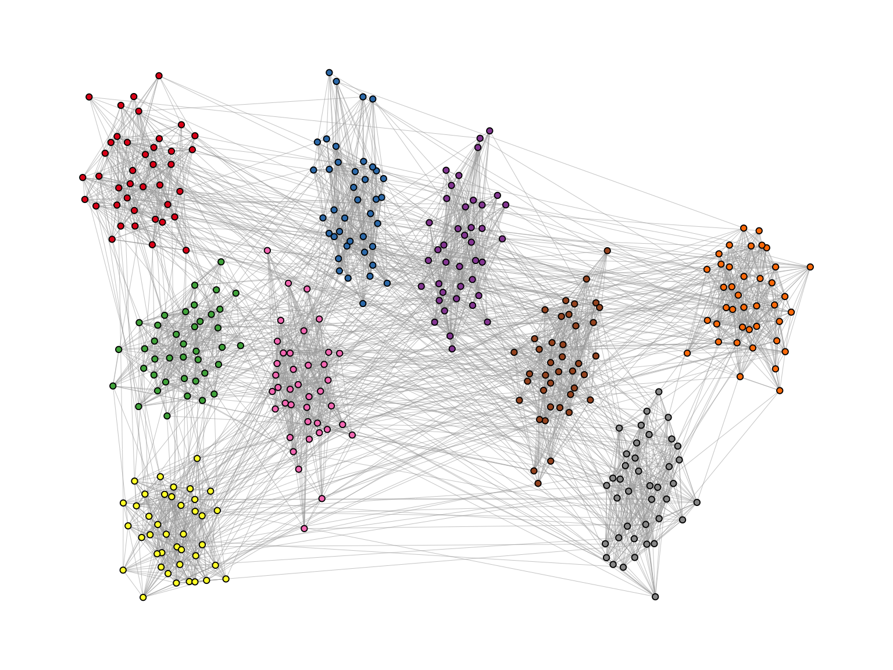
Of course the network used in the example is specifically tailored to illustrate the power of the algorithm. Using the backbone layout in real world networks may not always result in such a clear division of groups. It should thus not be seen as a universal remedy for drawing hairball networks. One should keep in mind: It can only emphasize a hidden group structure if it exists.
Figure 11.8 shows an empirical example where the algorithm was able to uncover a hidden group structure. The network shows facebook friendships of a university in the US. Node colour corresponds to dormitory of students.
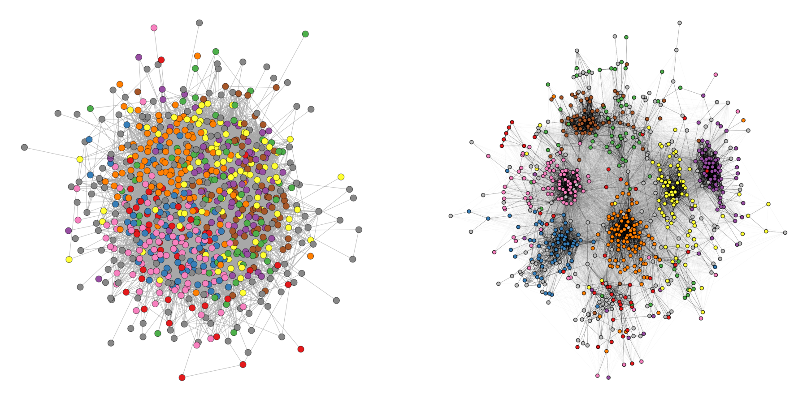
11.6 Longitudinal Networks
Longitudinal network data usually comes in the form of panel data, gathered at different points in time. We thus have a series of snapshots that need to be visualized in a way that individual nodes are easy to trace without the layout becoming too awkward.
For this part of the tutorial, you will need one additional packages.
library(patchwork)We will be using the 50 actor excerpt from the Teenage Friends and Lifestyle Study as an example. The data is part of the networkdata package.
data("s50")The dataset consists of three networks with 50 students together with their smoking behavior as a node attribute. The function layout_as_dynamic() from graphlayouts can be used to visualize the three networks. The implemented algorithm calculates a reference layout which is a layout of the union of all networks and individual layouts based on stress minimization and combines those in a linear combination which is controlled by the alpha parameter. For alpha = 1, only the reference layout is used and all graphs have the same layout. For alpha=0, the stress layout of each individual graph is used. Values in-between interpolate between the two layouts. The algorithm is not directly usable with ggraph, so we need to calculate the layout separately and then use the resulting coordinates in ggraph with the “manual” layout.
xy <- layout_as_dynamic(s50, alpha = 0.2)Now we can use ggraph in conjunction with patchwork to produce a static plot with the three networks side-by-side, shown in Figure 11.9.
pList <- vector("list", length(s50))
for (i in 1:length(s50)) {
pList[[i]] <- ggraph(
s50[[i]],
layout = "manual",
x = xy[[i]][, 1],
y = xy[[i]][, 2]
) +
geom_edge_link0(edge_linewidth = 0.6, edge_colour = "grey66") +
geom_node_point(shape = 21, aes(fill = as.factor(smoke)), size = 6) +
geom_node_text(label = 1:50, repel = FALSE, color = "white", size = 4) +
scale_fill_manual(
values = c("forestgreen", "grey25", "firebrick"),
guide = ifelse(i != 2, "none", "legend"),
name = "smoking",
labels = c("never", "occasionally", "regularly")
) +
theme_graph() +
theme(legend.position = "bottom") +
labs(title = paste0("Wave ", i))
}
wrap_plots(pList)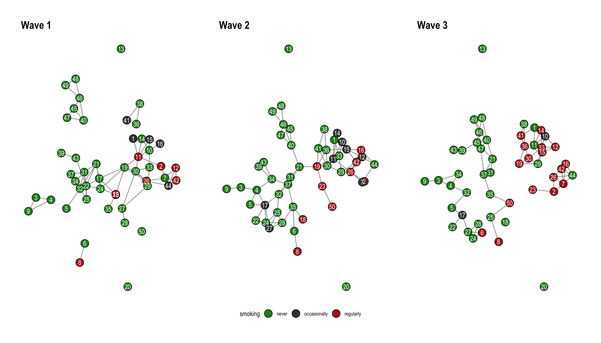
11.7 Multilevel networks
In this section, we look at layout_as_multilevel(), a layout algorithm in the graphlayouts package which can be used to visualize multilevel networks.
A multilevel network consists of two (or more) levels with different node sets and intra-level ties. For instance, one level could be scientists and their collaborative ties, the second level are labs and ties among them, and inter-level edges are the affiliations of scientists and labs.
The graphlayouts package contains an artificial multilevel network which will be used to illustrate the algorithm.
data("multilvl_ex")The package assumes that a multilevel network has a vertex attribute called lvl which holds the level information (1 or 2).
The underlying algorithm of layout_as_multilevel() has three different versions, which can be used to emphasize different structural features of a multilevel network.
Independent of which option is chosen, the algorithm internally produces a 3D layout, where each level is positioned on a different y-plane. The 3D layout is then mapped to 2D with an isometric projection. The parameters alpha and beta control the perspective of the projection. The default values seem to work for many instances, but may not always be optimal. As a rough guideline: beta rotates the plot around the y axis (in 3D) and alpha moves the point of view up or down.
11.7.1 Complete layout
A layout for the complete network can be computed via layout_as_multilevel() setting type = "all". Internally, the algorithm produces a constrained 3D stress layout (each level on a different y plane) which is then projected to 2D. This layout ignores potential differences in each level and optimizes only the overall layout.
xy <- layout_as_multilevel(multilvl_ex, type = "all", alpha = 25, beta = 45)To visualize the network with ggraph, you may want to draw the edges for each level (and inter level edges) with a different edge geom. This gives you more flexibility to control aesthetics and can easily be achieved with a filter (Figure 11.10).
ggraph(multilvl_ex, "manual", x = xy[, 1], y = xy[, 2]) +
geom_edge_link0(
aes(filter = (node1.lvl == 1 & node2.lvl == 1)),
edge_colour = "firebrick3",
alpha = 0.5,
edge_linewidth = 0.3
) +
geom_edge_link0(
aes(filter = (node1.lvl != node2.lvl)),
alpha = 0.3,
edge_linewidth = 0.1,
edge_colour = "black"
) +
geom_edge_link0(
aes(
filter = (node1.lvl == 2 &
node2.lvl == 2)
),
edge_colour = "goldenrod3",
edge_linewidth = 0.3,
alpha = 0.5
) +
geom_node_point(aes(shape = as.factor(lvl)), fill = "grey25", size = 3) +
scale_shape_manual(values = c(21, 22)) +
theme_graph() +
coord_cartesian(clip = "off", expand = TRUE) +
theme(legend.position = "none")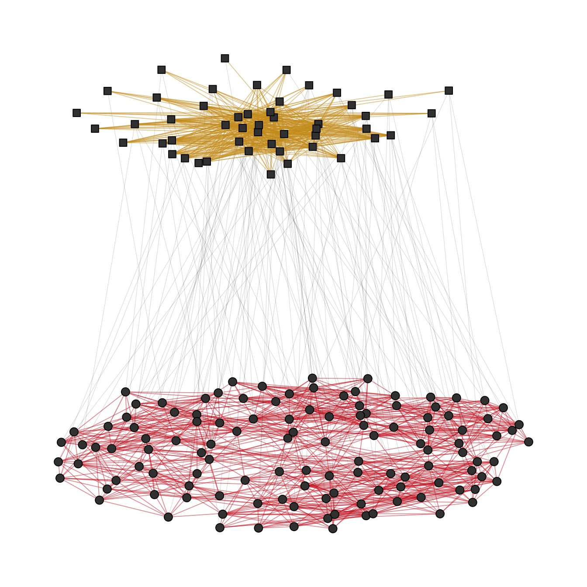
11.7.2 Separate layouts for both levels
In many instances, there may be different structural properties inherent to the levels of the network. In that case, two layout functions can be passed to layout_as_multilevel() to deal with these differences. In our artificial network, level 1 has a hidden group structure and level 2 has a core-periphery structure.
To use this layout option, set type = "separate" and specify two layout functions with FUN1 and FUN2. You can change internal parameters of these layout functions with named lists in the params1 and params2 argument. Note that this version optimizes inter-level edges only minimally. The emphasis is on the intra-level structures.
xy <- layout_as_multilevel(
multilvl_ex,
type = "separate",
FUN1 = layout_as_backbone,
FUN2 = layout_with_stress,
alpha = 25,
beta = 45
)Again, try to include an edge geom for each level (Figure 11.11).
cols2 <- c(
"#3A5FCD",
"#CD00CD",
"#EE30A7",
"#EE6363",
"#CD2626",
"#458B00",
"#EEB422",
"#EE7600"
)
ggraph(multilvl_ex, "manual", x = xy[, 1], y = xy[, 2]) +
geom_edge_link0(
aes(
filter = (node1.lvl == 1 & node2.lvl == 1),
edge_colour = col
),
alpha = 0.5,
edge_linewidth = 0.3
) +
geom_edge_link0(
aes(filter = (node1.lvl != node2.lvl)),
alpha = 0.3,
edge_linewidth = 0.1,
edge_colour = "black"
) +
geom_edge_link0(
aes(
filter = (node1.lvl == 2 & node2.lvl == 2),
edge_colour = col
),
edge_linewidth = 0.3,
alpha = 0.5
) +
geom_node_point(aes(
fill = as.factor(grp),
shape = as.factor(lvl),
size = nsize
)) +
scale_shape_manual(values = c(21, 22)) +
scale_size_continuous(range = c(1.5, 4.5)) +
scale_fill_manual(values = cols2) +
scale_edge_color_manual(values = cols2, na.value = "grey12") +
scale_edge_alpha_manual(values = c(0.1, 0.7)) +
theme_graph() +
coord_cartesian(clip = "off", expand = TRUE) +
theme(legend.position = "none")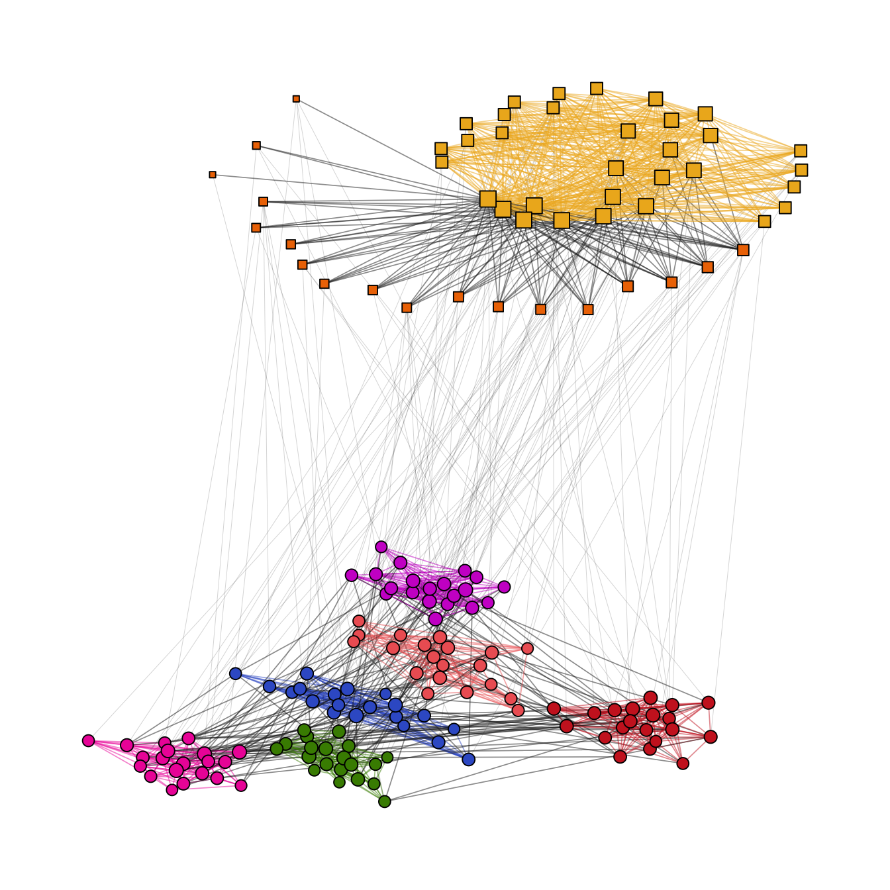
11.7.3 Fix only one level
This layout can be used to emphasize one intra-level structure. The layout of the second level is calculated in a way that optimizes inter-level edge placement. Set type = "fix1" and specify FUN1 and possibly params1 to fix level 1 or set type = "fix2" and specify FUN2 and possibly params2 to fix level 2 (Figure 11.12).
xy <- layout_as_multilevel(
multilvl_ex,
type = "fix2",
FUN2 = layout_with_stress,
alpha = 25,
beta = 45
)
ggraph(multilvl_ex, "manual", x = xy[, 1], y = xy[, 2]) +
geom_edge_link0(
aes(
filter = (node1.lvl == 1 & node2.lvl == 1),
edge_colour = col
),
alpha = 0.5,
edge_linewidth = 0.3
) +
geom_edge_link0(
aes(filter = (node1.lvl != node2.lvl)),
alpha = 0.3,
edge_linewidth = 0.1,
edge_colour = "black"
) +
geom_edge_link0(
aes(
filter = (node1.lvl == 2 & node2.lvl == 2),
edge_colour = col
),
edge_linewidth = 0.3,
alpha = 0.5
) +
geom_node_point(aes(
fill = as.factor(grp),
shape = as.factor(lvl),
size = nsize
)) +
scale_shape_manual(values = c(21, 22)) +
scale_size_continuous(range = c(1.5, 4.5)) +
scale_fill_manual(values = cols2) +
scale_edge_color_manual(values = cols2, na.value = "grey12") +
scale_edge_alpha_manual(values = c(0.1, 0.7)) +
theme_graph() +
coord_cartesian(clip = "off", expand = TRUE) +
theme(legend.position = "none")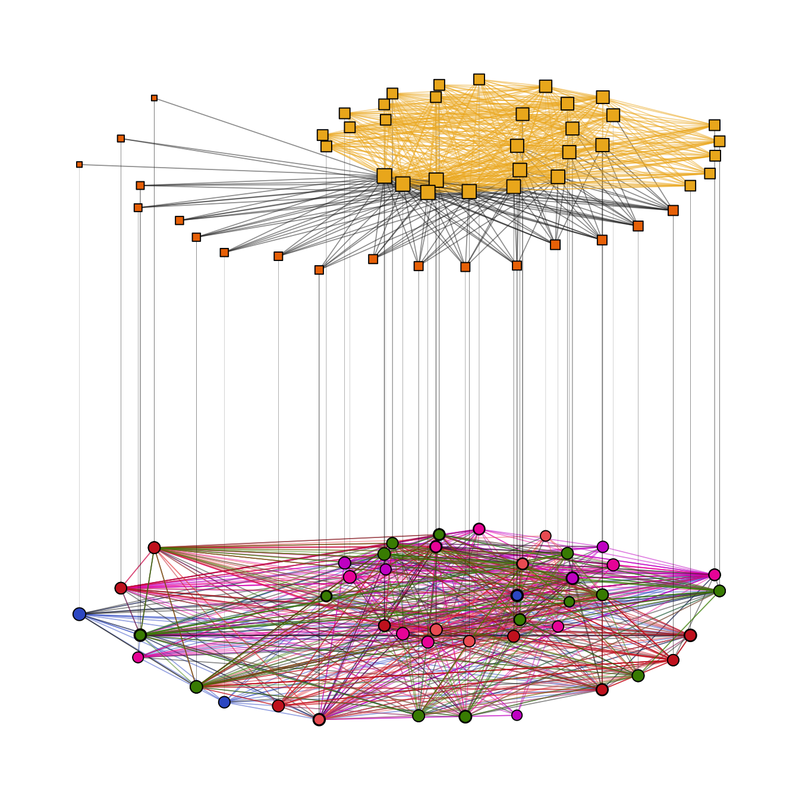
11.8 Edge bundling
Edge bundling is a technique to reduce visual clutter in dense networks. The idea is to group edges together into bundles, which can help to reveal underlying structures and patterns that may be hidden in a traditional edge representation. The ggraph package provides two functions for edge bundling: geom_edge_bundle_force() and geom_edge_bundle_path(). The first one uses a force-directed algorithm to create bundles, while the second one creates bundles based on the shortest path between nodes.
To illustrate the difference between the two algorithms, we use the network of US flights from the networkdata package. Figure 11.13 shows the force-directed approach and Figure 11.14 shows the path-based approach.
data("us_flights")
states <- ggplot2::map_data("state")
ggraph(us_flights, x = longitude, y = latitude) +
geom_polygon(
aes(long, lat, group = group),
states,
color = "white",
linewidth = 0.2
) +
coord_sf(crs = "NAD83", default_crs = sf::st_crs(4326)) +
geom_edge_bundle_force(color = "white", width = 0.05)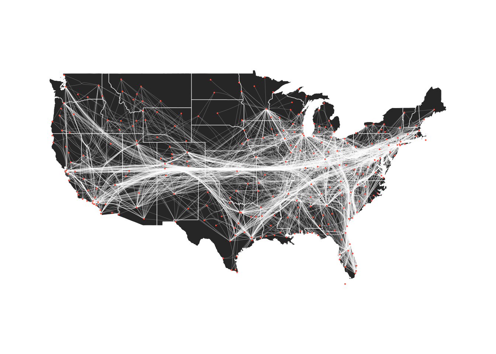
ggraph(us_flights, x = longitude, y = latitude) +
geom_polygon(
aes(long, lat, group = group),
states,
color = "white",
linewidth = 0.2
) +
coord_sf(crs = "NAD83", default_crs = sf::st_crs(4326)) +
geom_edge_bundle_path(color = "white", width = 0.05)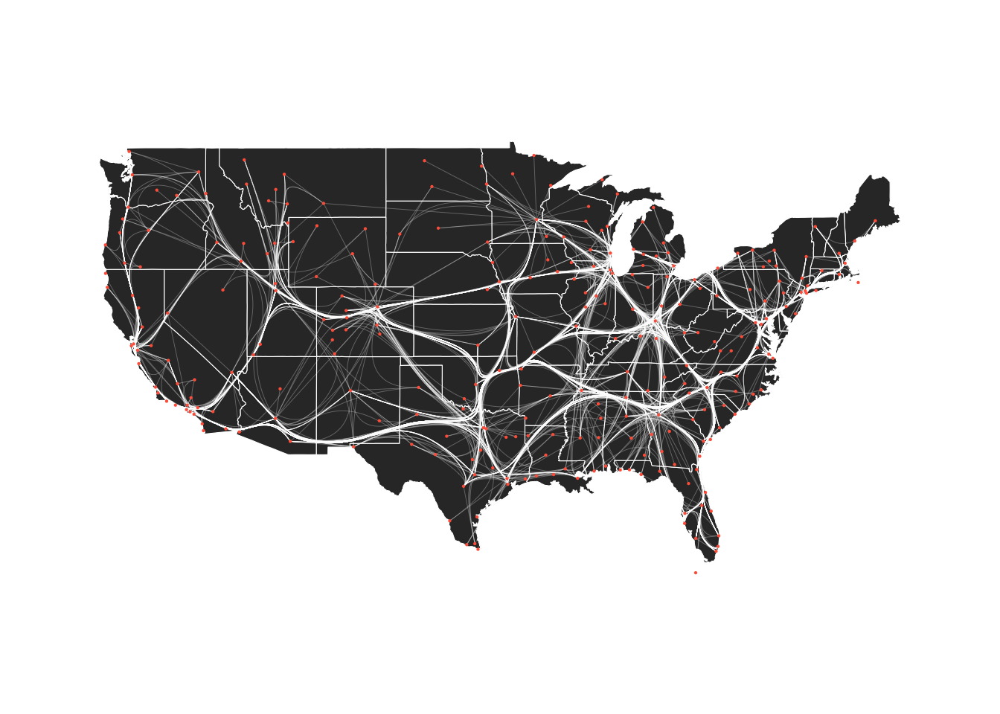
11.9 snahelper
Even with a lot of experience, it may still be an arduous process to produce nice looking figures by writing ggraph code. This is where the RStudio Addin snahelper can help you.
install.packages("snahelper")The package provides a GUI to visualize networks using ggraph. Instead of writing code, drop-down menus allow you to assign attributes to aesthetics or change appearances globally. One feature of the addin is that it is possible adjust the position of nodes individually. At the end, one can either directly export the figure to png or automatically insert the code to produce the figure into a script. That way, it is possible to make the figure reproducible.